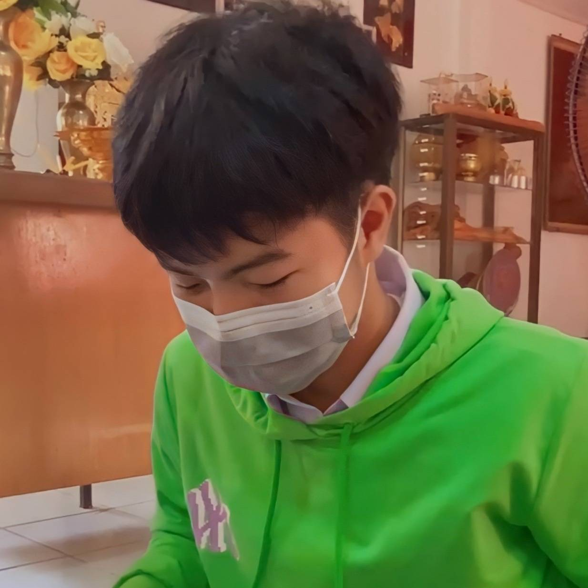
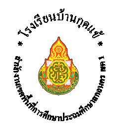
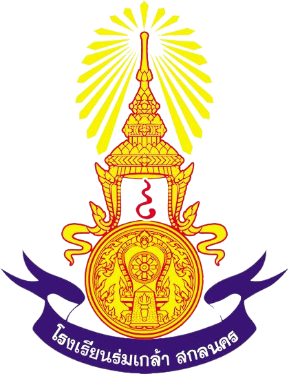

<center>
    <!DOCTYPE html>
    <html lang="en">
      <head>
        <meta charset="UTF-8" />
        <meta http-equiv="X-UA-Compatible" content="IE=edge" />
        <meta name="viewport" content="width=device-width, initial-scale=1.0" />
        <title>งานที่4 เลขที่33</title>
       
        <style>
          h1{color:7FE9DE;}
          h2{color:7FE9DE;}
          a{color:A5F1E9;}
          ul{color:A5F1E9;}
          ol{color:A5F1E9;}
          p{color:A5F1E9;}
        </style>
        <link rel="stylesheet" href="css/style.css">
      </head>
      <body style="background-color: rgb(0, 81, 255);">
        
        <h1 style="color: aqua;">นาย สุทธิพงษ์ วงค์ถามาตร เลขที่33 ชั้น ม.5/6</h1>
        <p style="color: rgb(0, 248, 21);"> ปัจจุบันเป็นนักเรียนอยู่ที่ <B><i>โรงเรียนธาตุนารายณ์วิทยา</i></B><p>
        <p style="color: rgb(0, 248, 21);"> 🐶🐶🐶ความถนัดคือ นอน และเล่นเกม🐶🐶🐶</p>
    
        <hr size=/>
        <h2 > ความสามารถ</h2>
        <div class="container">
            <ul class="myUL">
              <li>เข้าใจง่าย</li>
              <li>ทำตามได้</li>
            </ul>
        </div>
        <h2> งานอดิเรก</h2>
        <div class="container">
            <ol class="myol">
              <li>ขับรถเล่น</li>
              <li>ฟังเพลง</li>
              <li>ปลูกต้นไม้</li>
            </ol>
        </div>
        <h2> เพลงที่ชอบ</h2>
        <a href="https://www.youtube.com/watch?v=I9TCLKlMzpc" target="blank"><ol>
        1. เสแสร้ง
        </ol></a>
        <br>
        <table border="1">
          <thead>
            <tr><h2>ประวัติการศึกษา</h2></tr>
          <thead>
        <tbody>
            <tr>
              <td></td>
              <td align="center" bgcolor="EEEEEE">โรงเรียนบ้านกุดแข้</td>
              <td bgcolor="EEEEEE"> ปี 2554 - 2560</td>
            </tr>
            <tr>
              <td></td>
              <td align="center" bgcolor="EEEEEE">โรงเรียนร่มเกล้า</td>
              <td bgcolor="EEEEEE"> ปี 2560 - 2564</td>
            </tr>
            <tr>
              <td></td>
              <td align="center" bgcolor="EEEEEE">โรงเรียนธาตุนารายณ์วิทยา</td>
              <td bgcolor="EEEEEE"> ปี 2564 - 2565</td>
            </tr>
          </thead>
        <tbody>
        </table>
        <hr> 
        <font color="red">
          <h2>งานที่4 เรื่องcss</h2>
          <h2>ผู้จัดทำ นาย สุทธิพงษ์ วงค์ถามาตร เลขที่33 ชั้น ม.5/6</h2>
        </font>
        <hr>
    </center>
      </body>
    </html>
    